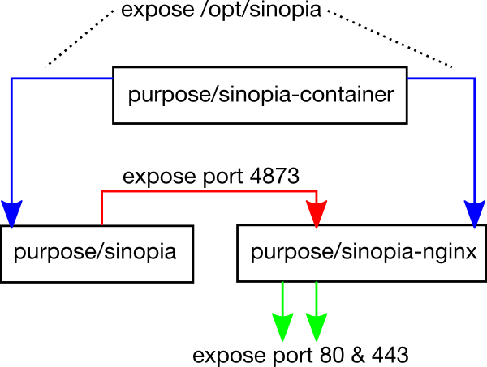

private npm registry
with docker & sinopia
bence dányi (@madbence)
purpose industries
private packages
- tarball ☹
- git remote ☹
- package ☺
$ npm install http://my-org.com/my-package.tar.gz
$ npm install git://github.com/my-org/my-package.git
$ npm install my-org/my-package
$ npm install @my-org/my-package
sinopia
- zero conf
- private registry
- cache
- audit packages
- behind firewalls
- simple storage (everyone ♥ files)
- auth plugins (htpasswd, LDAP, etc.)
usage
$ npm install -g sinopia
$ sinopia
$ npm install my-private-package --registry http://localhost:4873
in production?
- management
- availability
- isolation
docker 101
- container ≈≈≈ virtual machine
- container ≈≈ isolated process
- container ≈ logical service
$ docker run --rm busybox echo 'hello nodebp'
containers for sinopia
demo time!
questions?
- http://github.com/purposeindustries/docker-sinopia{-container,-nginx,}
- http://registry.hub.docker.com/repos/purpose/sinopia{-container,-nginx,}
- http://madbence.github.io/nodebp-sinopia